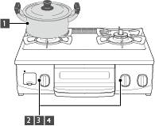
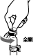
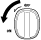
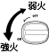
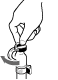
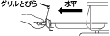
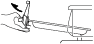
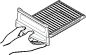
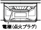
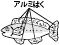

コンロの使いかた（基本操作）

お使いになる前に…
ガス栓を左に回し、全開にする。

1
ごとくの中央に鍋などを置く
2
 をしっかりと最後まで押しながら回す
（「ON」の方向へ回しきる）
- 点火します。
- 必ず、手を離しても点火していることを確認してください。
器具栓つまみをしっかりと最後まで押しながら回さないと、火が消える場合があります。
3
をゆっくり回す
- 火力を調節します。
- 火力は鍋などの底に応じて、銅底から炎があふれない程度に調節してください。

4
を回す（OFFの位置まで回す）
- 消火します。
- 必ず、火が消えたことを確認してください。
5
ガス栓を閉める（最後まで確実に閉める）
- 調理が終わったら、ガス栓を右に回し、閉める。
- 調理後は必ず閉めることで、常時ガスが漏れないか確認してください。
必ず、器具が冷めていることを確認してください。

お知らせ
- 器具栓つまみを速く操作すると、火が消えたり、炎が一瞬大きくなる場合があります。
グリルの取り扱いと準備
食材を上手に焼くための準備方法をご説明します。
食材の下ごしらえは「食材を上手に焼くために」をご覧ください。
グリルの取り出し
1 グリルとびらをゆっくり水平に引き出す
いっぱいに引き出すと、いったん止まります。

2 少し持ち上げて本体からはずし、そのまま取り出す

3 グリルとびらを両手でしっかりと持ち、ゆっくりと持ち運ぶ

お知らせ
- グリルとびらを完全に引き出す前に持ち上げると、グリル皿に傷が付きます。
- グリル皿・グリル焼網の取り付けかたは本書の19・36ページをご覧ください。
- グリルとびらの取りはずしかた・取り付けかたは本書の36ページをご覧ください。
グリルを初めて使うときは
1 グリル焼網を取りはずす
グリル焼網が取りはずされていることを確認してください。
2 約5分間、空焼きをする
部品に付着している加工油を焼き切ります。
火力は、器具栓つまみを全開にしてください。
においや煙が気になる場合は、グリル庫内が冷めるまで5分程度待ってから、繰り返し行ってください。
グリルの操作については本書の30ページをご覧ください。
3 ガス栓を閉める（最後まで確実に閉める）
使用後は、ガス栓を右に回し、閉めてください。
お願い
- グリル庫内に紙や梱包部材が入っていないか確認して、すべて取り除いてください。
- グリル皿に水などを入れないでください。
- 空焼き時に、グリル過熱防止センサーがはたらき、自動で火が消える場合があります。この場合、器具栓つまみを消火の状態に戻し、グリル庫内が冷めるまで5分程度待ってから、再度点火してください。
お知らせ
- グリル排気口やグリル排気口以外からも煙が出ますが、異常ではありません。
調理のポイント
お願い
- 調理中は、機器から離れないようにし、焼き過ぎに注意してください。
調理物の種類によっては、グリル過熱防止センサーやグリル消し忘れ消火機能がはたらく前に発火するおそれがあります。
例）「みりん干し」や「みりん漬け」など焦げやすい魚、「めざし」や「うるめいわし」などの小魚の丸干しなど水分の少ないもの、ハラスなど特に脂の多いもの、干し物や薫製、脂分の多いにしん・塩さば・とり肉など - 準備や調理については以下の「食材を上手に焼くために」をよく読んで、使用してください。
- 食材の種類や大きさによって、仕上がりが異なります。種類や大きさをそろえて調理してください。
- つけ焼きや照り焼き、下味をつけた魚などは焦げやすいので、様子を見ながら焼いてください。
- グリル庫内が高温になると、グリル過熱防止センサーがはたらき、自動で火が消える場合があります。器具栓つまみを消火の状態に戻し、グリル庫内が冷めるまで5分程度待ってから、使用してください。
- 焼き上がったらすぐに取り出してください。余熱で焦げることがあります。
- グリル皿は急に冷やさないでください。使用直後にグリル皿に水をかけると、変形する場合があります。冷めてからお手入れしてください。
- 調理でアルミはくを使用する場合は、電極（点火プラグ）に触れないように注意してください。アルミはくが付着すると、点火不良の原因になります。

食材を上手に焼くために
1 下ごしらえをする
- 冷凍の魚は、しっかり解凍します。
- 冷蔵の魚は、常温でしばらくおきます。
- 生魚は水洗いした後、水気をよくふき取ります。
- みそ漬けやかす漬けの魚は、みそやかすをよくふき取ります。
お知らせ
- 塩をつけると、身がしまって身くずれしにくくなります。
- さばやいわしなど背の青い魚は脂分が多いので、多めに塩をして時間をおき、身をしめます。白身魚は、塩を少なめにふり、時間も短めにします。
- 川魚やいか・えび・貝などは、焼く直前に塩をふります。
- 魚の重量の約2％程度の塩をつけます。
- 身の厚いところには厚く、薄いところには薄くつけます。
- 尾やひれは特に焦げやすいので、多めに塩をつけてください。また、アルミはくで包んでおくと、焦げかたが少なくなります。
- 皮目に十字の切り込みを入れると、火の通りがよくなり、皮が破れることによる脂の飛び散りも少なくすることができます。
